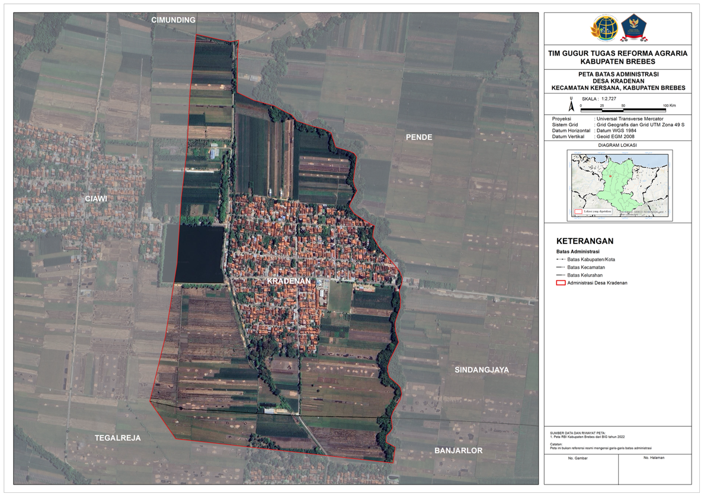
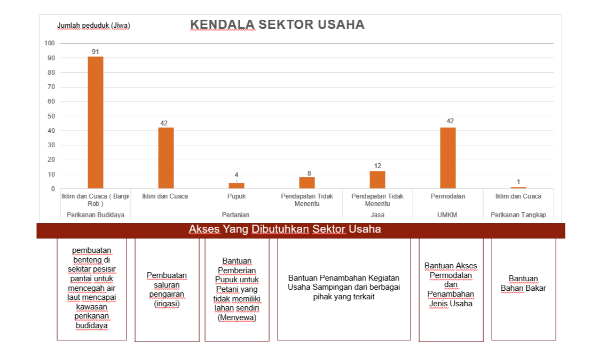
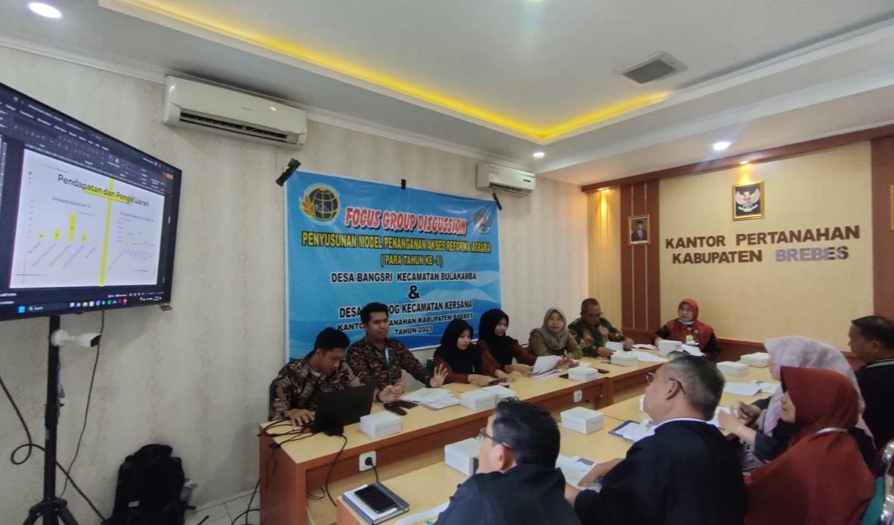

My Profile

I graduated from the Department of Geography of the University Muhammadiyah Surakarta. I have good communication skills and can work individually or in a team. It's proven when I worked as a Consultant at Badan Pertanahan Nasional Kabupaten Brebes. I also have the ability to process and analyze spatial data. During work, I actively participated in disaster essay competitions, and was awarded as one of the 30 best participants.
My Skills
-
ArcGIS
-
QGIS
-
ArcGIS Online
-
ENVI
-
PostGIS, SQL
-
HTML, Javascript, CSS
Work Experience
- 1. Map Processing - Statistic Indonesia (Brebes Regency)
Performed georeferencing of spatial data, corrected administrative boundary delineations, improved the positional accuracy of building features, and carried out comprehensive map content enhancements to ensure higher cartographic quality and spatial reliability.


- 2. Consultant - National Land Agency Republic Indonesia Reginal Office (Brebes Regency)
Handled the collection, identification, processing, and updating of geospatial data for mapping potential TORA (Land Object for Agrarian Reform) areas. Field data was added to geospatial databases to keep the maps accurate and reliable. Priority areas for TORA were found by combining different data layers, such as rainfall, slope, land use, spatial plans, and socio-economic factors. Carried out spatial analysis to help identify and assess suitable TORA locations.


- 3. Field Staff - National Land Agency Republic Indonesia Reginal Office (Brebes Regency)
Carried out social mapping to collect data on land use, community structure, and local needs. Identified key locations for Agrarian Reform programs. Analyzed the data to support planning and decisions. Helped lead discussions with local officials and created maps to support village development.
  
Project
-
.png) Frontend
Frontend
This is a simple frontend project that presents web-based information about disasters. The interface allows users to access and understand disaster-related data through an interactive layout. The project is built using HTML, CSS, and JavaScript
-
WebGIS Using Leaflet
This WebGIS project is built using Leaflet and displays disaster level information across Indonesia. The map is interactive users can search locations, zoom in and out, and switch between different map layers such as imagery. The data is presented using GeoJSON, which was previously processed and classified using ArcGIS.
.png)
-
.png) WebGIS Using ArcGIS API
WebGIS Using ArcGIS API
This WebGIS project is built using the ArcGIS API for JavaScript and presents disaster level information across Indonesia. The map is fully interactive users can search for locations, zoom in and out, and view detailed pop-up information for each area. The data is integrated using GeoJSON, which was previously processed and classified using ArcGIS.